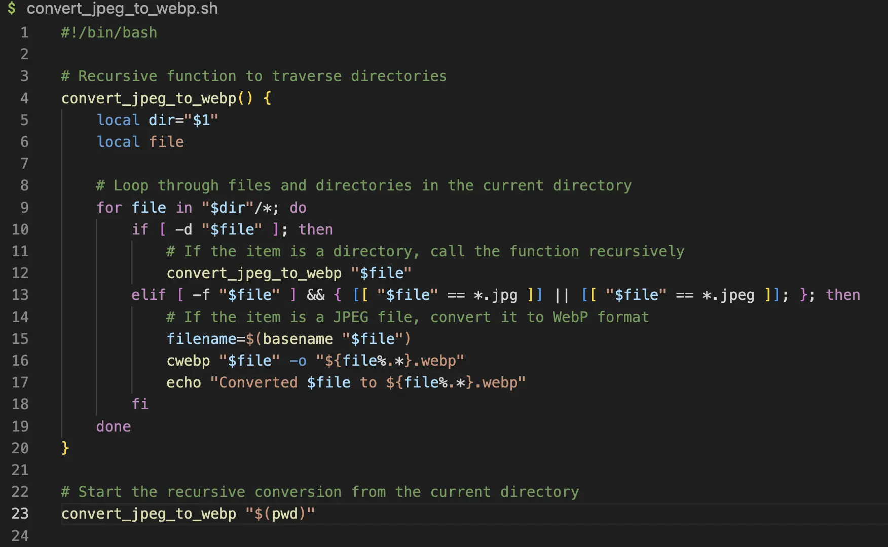

I was inspired to create this tutorial while updating my personal website, which is this site that you are
looking at. I had logged into my web-hosting administrator's page and out of curiosity, decided to explore
host-provider's inbuilt web performance monitoring tool. It was a tool which could analyse how optimised my
website was. When
the report was generated, I was surprised to find out that the website was running sub-optimally. The report
provided a list of suggestions on how my website can be optimised, one of which was to use '.webp' images
instead of the usual '.png' and '.jpeg' images.
On doing a search, I found out that WebP, which has a file extension of '.webp', is an image format developed
by Google that provides both lossy and lossless compression for images on the web. It aims to create smaller
file sizes without compromising image quality, thus helping web pages load faster. The conversion from other
image formats to WebP can be done using the 'cwebp' command line tool by Google.
cwebp input.jpg -o output.webp
I tried it out on a jpeg file and it worked nicely. But a bigger problem loomed ahead. All the images used in
the website were of .png or .jpeg formats. Converting each image manually to .webp would be a painstaking
task. So, being the software engineer that I am, the idea of automation instantly came to mind. Having taken
a few courses on Linux which covered shell scripting, I thought it would be a good idea to experiment with
automating the image conversion. So, the process of creating a Bash script began. Click here for the Github repository.
Script requirements
The first step was to decide on the requirements. Besides converting an image to WebP format, it should work
down from a root directory. In other words, it should recursively convert images which are inside a child
directory.
Coding
Click The script begins with '#!/bin/bash'. It specifies that the Bash shell interpreter will be
used to
run
the
commands in the script. Aftert that, create a function. Let's call it 'convert_jpeg_to_webp'. At
this
point, the script should look like below.
#!/bin/bash
convert_jpeg_to_webp() {
}
Initialise two local variables, 'dir' and 'file'. 'dir' is a directory variable which will
hold the value of the first
argument
passed
to the function. Run the function below the function code using 'convert_jpeg_to_webp "$(pwd)"' to
inform the script to work on the present work directory.
#!/bin/bash
convert_jpeg_to_webp() {
local dir="$1"
local file
# to implement
}
convert_jpeg_to_webp "$(pwd)"
A 'for' loop iterates over each file in the present work directory ($dir).
Within the loop, an 'if' statement checks if the current item ($file) is a directory using the -d
flag.
If it is, the function calls itself recursively with the current directory ("$file")
as an argument. This recursive call allows the function to traverse nested directories.
#!/bin/bash
convert_jpeg_to_webp() {
local dir="$1"
local file
# Loop through files and directories in the current directory
for file in "$dir"/*; do
if [ -d "$file" ]; then
# If the item is a directory, call the function recursively
convert_jpeg_to_webp "$file"
fi
done
}
convert_jpeg_to_webp "$(pwd)"
If the item is a regular file (-f "$file") and has a file extension of .jpg or .jpeg, the script
converts it to WebP format.
#!/bin/bash
convert_jpeg_to_webp() {
local dir="$1"
local file
# Loop through files and directories in the current directory
for file in "$dir"/*; do
if [ -d "$file" ]; then
# If the item is a directory, call the function recursively
convert_jpeg_to_webp "$file"
elif [ -f "$file" ] && { [[ "$file" == *.jpg ]] || [[ "$file" == *.jpeg ]]; }; then
# If the item is a JPEG file, convert it to WebP format
filename=$(basename "$file")
cwebp "$file" -o "${file%.*}.webp"
fi
done
}
convert_jpeg_to_webp "$(pwd)"
The cwebp command converts the JPEG file to WebP format. The
output file is named with the same base name as the original JPEG file but with the .webp extension.
After conversion, a message is printed to the console indicating that the file has been successfully
converted. This is how the entire script
looks like.

Running the script
By default, a newly created script is not executable. Change the permission of the script using
'chmod
+x
script_name'. This grants execute permission to all categories of users. If permission is to be
granted
to
only the owner, add the letter 'u' to the beginning '+x'. e.g. 'chmod u+x
script_name'.
chmod +x convert_jpeg_to_webp.sh
Run the script using ./script_name.
./convert_jpeg_to_webp.sh
Remove the jpeg files which are not needed. The 'find' command recursively searches the current
directory and its subdirectories for files which have
image formats of .jpeg, .jpg or .png and deletes them.
From here, we can
think of various ways to modify and extend the functionality of the script, such as converting png to webp,
or from any format to another format.
In fact, as the file types are currently hardcoded, we can consider the use of variables, thus making the
script more
robust. Refer to my Github
repo for variants of the above script. Finally, we can also implement the removal of the original
file images using the script, instead of manually keying it into the terminal, as done earlier.
Conclusion
This is all for the tutorial. We have seen how we can create a bash script to automate the conversion of file
images from one format to another, thus saving a lot of time. This is one of the advantages of using Linux
instead of other operating systems. I experienced firsthand the practical advantages of the command line
through this mini-project. I have shown a basic implementation of the script, while exploring
possible implementations to improve on the existing code. Hope that you have found the tutorial useful.
😊